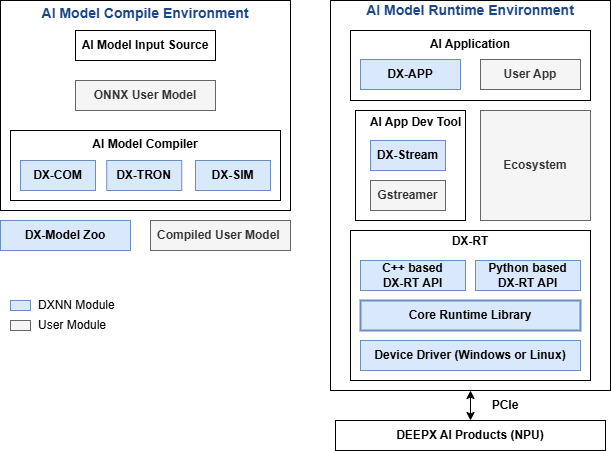
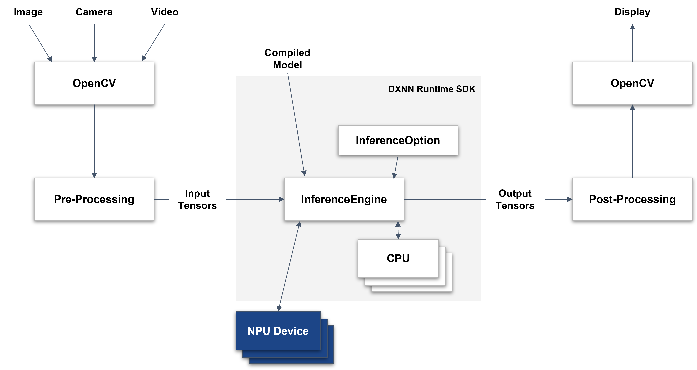

DXNN Runtime Overview
This chapter provides an overview of the DEEPX SDK architecture and explains each core component and its role in the AI development workflow.
DEEPX SDK Architecture¶

Figure. DEEPX SDK Architecture
DEEPX SDK is an all-in-one software development platform that streamlines the process of compiling, optimizing, simulating, and deploying AI inference applications on DEEPX NPUs (Neural Processing Units). It provides a complete toolchain, from AI model creation to runtime deployment, optimized for edge and embedded systems, enabling developers to build high-performance AI applications with minimal effort.
DX-COM is the compiler in the DEEPX SDK that converts a pre-trained ONNX model and its associated configuration JSON file into a hardware-optimized .dxnn binary for DEEPX NPUs. The ONNX file contains the model structure and weights, while the JSON file defines pre/post-processing settings and compilation parameters. DX-COM provides a fully compiled .dxnn file, optimized for low-latency and high-efficient inference on DEEPX NPU.
DX-RT is the runtime software responsible for executing ,dxnn models on DEEPX NPU hardware. DX-RT directly interacts with the DEEPX NPU through firmware and device drivers, using PCIe interface for high-speed data transfer between the host and the NPU, and provides C/C++ and Python APIs for application-level inference control. DX-RT offers a complete runtime environment, including model loading, I/O buffer management, inference execution, and real-time hardware monitoring.
DX ModelZoo is a curated collection of pre-trained neural network models optimized for DEEPX NPU, designed to simplify AI development for DEEPX users. It includes pre-trained ONNX models, configuration JSON files, and pre-compiled DXNN binaries, allowing developers to rapidly test and deploy applications. DX ModelZoo also provides benchmark tools for comparing the performance of quantized INT8 models on DEEPX NPU with full-precision FP32 models on CPU or GPU.
DX-STREAM is a custom GStreamer plugin that enables real-time streaming data integration into AI inference applications on DEEPX NPU. It provides a modular pipeline framework with configurable elements for preprocessing, inference, and postprocessing, tailored to vision AI work. DX-Stream allows developers to build flexible, high-performance applications for use cases such as video analytics, smart cameras, and edge AI systems.
DX-APP is a sample application that demonstrates how to run compiled models on actual DEEPX NPU using DX-RT. It includes ready-to-use code for common vision tasks such as object detection, face recognition, and image classification. DX-APP helps developers quickly set up the runtime environment and serves as a template for building and customizing their own AI applications.
Inference Flow of DX-RT¶
Here is the inference flow of DX-RT.

Figure. Inference Flow of DXNN Runtime
This figure illustrates the inference workflow of the DXNN Runtime SDK, which integrates OpenCV-based input/output handling with efficient NPU-accelerated model execution.
Input & Pre-Processing
Input data—such as images, camera feeds, or video—is captured using OpenCV. The data is then passed through a Pre-Processing module, which transforms it into \input tensors suitable for the model.
Feeding Input to the Inference Engine
The pre-processed input tensors are fed into the InferenceEngine along with the compiled model (.dxnn). Before execution, you must configure the InferenceOption, which specifies the target device and available resources.
Model Execution
The InferenceEngine is the core component of the DXNN Runtime SDK. It:
- Initializes and controls the NPU device
- Manages memory for input/output tensors
- Schedules inference tasks across NPU and CPU, optimizing their interaction for real-time performance
Post-Processing & Display
The output tensors are processed to a Post-Processing stage, typically involving OpenCV for decoding, formatting, or visualization. Finally, the results are displayed or forwarded to the next processing step.